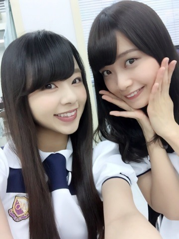
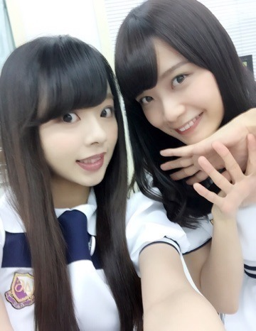

こんにちわぁ.＊
まにだよ？ ろってぃーだよ？♡
んにゃ。
...。♡
これ↑。積み重なった畳の上で三角座りして撮ったんやっけね？
確か畳の上♡.＊
blog更新は「ミュージックステーション」ぶりやね⊂((・x・))⊃
皆、blogコメントや755でのヤジコメ...
本当にありがとうございました♡
やっぱり「ミュージックステーション」は,特別緊張しちゃいましたぁ♡ノ
パフォーマンス中は全然大丈夫なのですが,
始まる前とか、んー金曜は朝から心がザワザワしてましたね！笑 本番直前も「緊張するぅぅぅ．」ってずっと言ってましたねぇ♡笑
応援してくれた皆ありがとう！
それとそれと,水曜は
「テレ東音楽祭(2)」でしたねん*\(^o^)/*
ぁあ！『太陽ノック』新曲初披露でした！
今回の表題曲は,前回の『命は美しい』とはガラッとイメージの違う曲になっているので,
とにかくhappyに笑顔で歌いたいと思います♡
まにまにまいまい♡

新制服ね♡

そしてそしてぇー、
今日は「TBS音楽の日」です！
これからです！
今TBSの楽屋にいます！
生放送なので,間違いはできないですねぇ♡
楽しく頑張ってきます！
皆見ててくださいねん！
もしくわ録画よろしくです.＊
ではではまたblog更新します。
またねぇーー♡